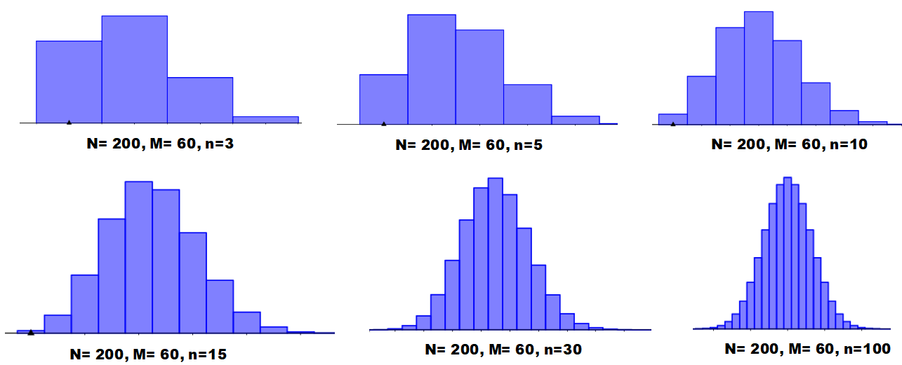
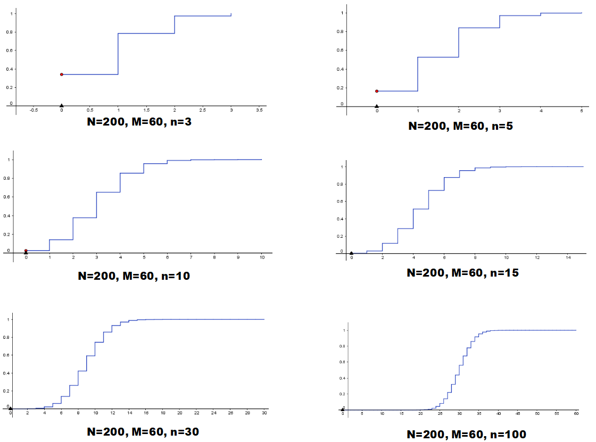
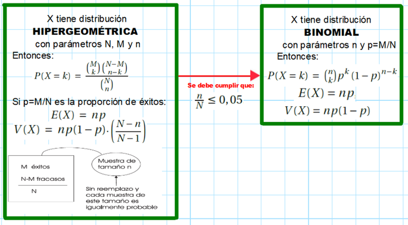
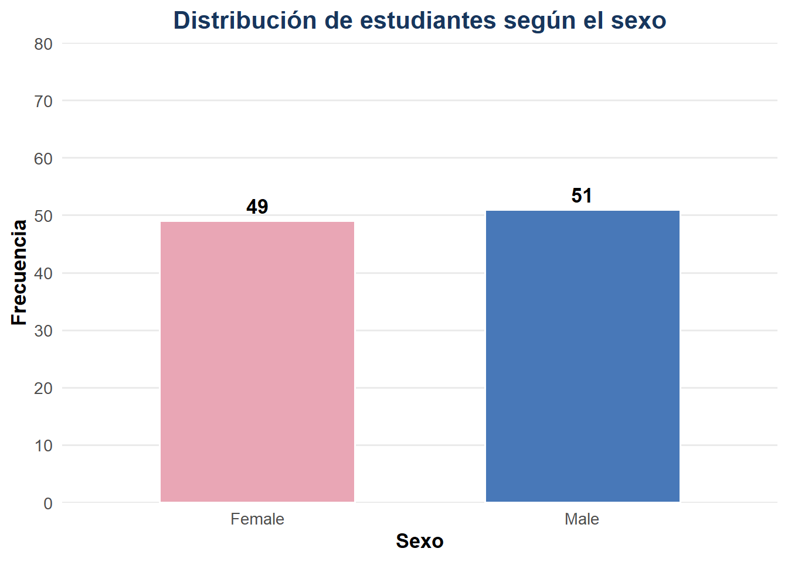

DISTRIBUCIONES DISCRETAS EN R
Distribución hipergeométrica

About these lecture notes. These notes explain the hypergeometric distribution, its probability model, examples and applications using R.
La teoría mencionada puede revisarse en el capítulo 3 de mis notas de Estadística básica. Puedes consultar también mis notas de clase y materiales docentes.
1 Distribución hipergeométrica
1.0.1 Experimento hipergeométrico
En general, un experimento hipergeométrico con parámetros \(n\), \(M\) y \(N\) está basado en las siguientes suposiciones (véase la figura de abajo):
La población o conjunto donde deba hacerse el muestreo es una población finita con \(N\) elementos.
Cada elemento de la población puede ser caracterizado como un éxito o un fracaso.
Hay \(M\) éxitos en la población.
Se elige una muestra sin reemplazo de \(n\) individuos, de tal forma que sea igualmente probable seleccionar cada subconjunto de tamaño \(n\).
1.0.2 Función de probabilidad
Sea \(X\) el número de éxitos obtenidos en una muestra escogida al azar al realizar un experimento hipergeométrico con parámetros \(n\), \(M\) y \(N\). Entonces, la probabilidad de elegir de manera exacta \(k\) éxitos en \(n\) intentos está dada por la función de probabilidad \(f\):
\[ f(k) \;=\; P(X=k)\;= \; \frac{{M\choose k}\,{N-M\choose n-k}}{{N\choose n}}, \qquad \text{donde}\quad k=0,1,2, \ldots, n \quad \text{y}\quad n\leq N \]
La correspondiente distribución de \(X\) se conoce con el nombre de distribución hipergeométrica con parámetros \(n\), \(M\) y \(N\).
El código para escribir la expresión anterior es:
$$ f(k) \;=\; P(X=k)\;= \; \frac{{M\choose k}\,{N-M\choose n-k}}{{N\choose n}}, \qquad \text{donde}\quad k=0,1,2, \ldots, n \quad \text{y}\quad n\leq N $$1.0.3 Gráfica de la función de probabilidad
En las gráficas de abajo se muestran diferentes representaciones gráficas de la función de probabilidad hipergeométrica con diferentes \(n=3, 5, 10, 15, 30, 100\) y los mismos valores de \(N=200\) y \(M=60\).

1.0.4 Función de de distribución acumulada
Si \(f\) es la función de probabilidad hipergeométrica, entonces la función de distribución acumulada hipergeométrica \(F\) se calcula así:
\[F(t)\; =\; P(X\leq t) \;= \; \sum\limits_{x; \, x\leq t} f(x), \quad \text{para todo $t$ real}\]
En las gráficas de abajo se muestran diferentes representaciones gráficas de \(F\) con diferentes \(n=3, 5, 10, 15, 30, 100\) y los mismos valores de \(N=200\) y \(M=60\).

1.0.5 Esperanza y varianza
Si \(p=\frac{M}{N}\) es la proporción de éxitos en la población, entonces: \[ E(X)\;=\; np \qquad \text{y}\qquad V(X)\;= \; n p(1-p)\cdot \left(\frac{N-n}{N-1}\right)\]
El código para escribir la expresión anterior es:
$$ E(X)\;=\; np \qquad \text{y}\qquad V(X)\;= \; n p(1-p)\cdot \left(\frac{N-n}{N-1}\right)$$2 Aproximación de la hipergeométrica a la binomial
Las distribuciones binomial e hipergeométrica coinciden cuando \(\frac{n}{N}\leq 0.05\). En este caso, el factor \(\frac{N-n}{N-1}\) se aproxima a 1 y la razón \(p= M/N\) es la proporción de los éxitos de la población. En resumen, tendríamos:
\[p\; = \; \frac{M}{N}, \qquad E(X)\;=\; np \qquad \text{y}\qquad V(X)\;= \; n p (1-p)\]
El código para escribir la expresión anterior es:
$$p\; = \, \frac{M}{N}, \qquad E(X)\;=\; np \qquad \text{y}\qquad V(X)\;= \; n p (1-p)$$De manera gráfica, esta aproximación se puede visualizar así:

3 Cómo hacerlo con R
Sean \(N\) el tamaño poblacional, \(M\) el número de éxitos en la población y \(n\) el tamaño muestral.
Función de probabilidad
El código correspondiente para calcular la función de probabilidad \(f(k)=P(X=k)\) de la variable aleatoria \(X\) es:
dhyper(k, M, N-M, n)Función de distribución acumulada
El código correspondiente para calcular la función de distribución acumulada \(F(k) = P(X\leq k)\) de la variable aleatoria \(X\) es:
phyper(k, M, N-M, n)4 Ejemplo 1: Enunciado
Una cantidad de 75 componentes eléctricas están sujetas a control de calidad. Se encontró que 15 de las componentes estaban defectuosas y las restantes no lo estaban. Se escoge una muestra aleatoria de 5 componentes de este lote y sea \(X\) el número de componentes defectuosos escogidos en la muestra. Resuelva los siguientes incisos, siempre escribiendo los resultados hallados en términos de \(X\):
La probabilidad de que el número de componentes defectuosos sea igual a 3 (utilizando la fórmula hipergeométrica).
La probabilidad de que el número de componentes defectuosos sea igual a 3 (utilizando la función
dhyper).La probabilidad de que el número de componentes defectuosos sea menor o igual que 3 (utilizando la fórmula hipergeométrica).
La probabilidad de que el número de componentes defectuosos sea menor o igual que 3 (utilizando la función
phyper).La probabilidad de que el número de componentes defectuosos sea mayor que 3 (utilizando la fórmula hipergeométrica).
La probabilidad de que el número de componentes defectuosos sea mayor que 3 (utilizando la función
phyper).La probabilidad de que el número de componentes defectuosos se encuentre entre 1 y 4 (ambos inclusive).
La probabilidad de que el número de componentes defectuosos se encuentre entre 1 y 4 (ambos no inclusive).
La esperanza de X, es decir, la esperanza del número de componentes defectuosos.
La varianza de X, es decir, la varianza del número de componentes defectuosos.
La desviación de X, es decir, la desviación del número de componentes defectuosos.
Verifique si este ejercicio se puede resolver también con la binomial. En caso afirmativo (o negativo), utilice la distribución binomial para calcular las dos probabilidades que se piden en los incisos (m) y (n). Compare estos resultados con los hallados en los incisos (a) y (d), respectivamente.
La probabilidad de que el número de componentes defectuosos sea igual a 3.
La probabilidad de que el número de componentes defectuosos sea menor o igual que 3.
5 Ejemplo 1: Solución
La variable \(X\) tiene distribución hipergeométrica con parámetros \(N=75\), \(M=15\) y \(n=5\).
N <- 75
M <- 15
n<- 55.0.1 Solución parte (a)
Utilizando la fórmula hipergeométrica, la probabilidad de que el número de componentes defectuosos sea igual a 3 se calcula así:
\[P(X= 3) \;= \; \frac{{15\choose 3}\,{60\choose 2}}{{75\choose 5}} = 0.0467\]
El código para escribir la expresión anterior es:
$$P(X= 3) \;= \; \frac{{15\choose 3}\,{60\choose 2}}{{75\choose 5}} = 0.0467$$k <- 3
w <- choose(N,n)
defectuoso <- choose(M,k)
bueno <- choose(N-M,n-k)
probabilidad_a <- defectuoso* bueno/w
probabilidad_a## [1] 0.04666156Es decir, la probabilidad de que el número de componentes defectuosos sea igual a 3 es 0.0467.
5.0.2 Solución parte (b)
Con la función dhyper, la probabilidad se calcula así:
exito <- M
fracaso <- N-M
muestra <- n
k <- 3
probabilidad_b <- dhyper(k, exito, fracaso, muestra)
probabilidad_b## [1] 0.04666156Es decir, la probabilidad de que el número de componentes defectuosos sea igual a 3 es 0.0467.
5.0.3 Solución parte (c)
Utilizando la fórmula hipergeométrica, la probabilidad de que el número de componentes defectuosos sea menor o igual que 3 se calcula así: \[\begin{eqnarray*} P(X\leq 2) &=& P(X=0) \; +\; P(X=1) \; +\; P(X=2) \; +\; P(X=3)\\ &=& \frac{{15\choose 0}\,{60\choose 3}}{{75\choose 3}} \; +\; \frac{{15\choose 1}\,{60\choose 2}}{{75\choose 3}} \; +\; \frac{{15\choose 2}\,{60\choose 1}}{{75\choose 3}} \; +\; \frac{{15\choose 3}\,{60\choose 2}}{{75\choose 5}}\\ &=& 0.9951 \end{eqnarray*}\]
El código para escribir la expresión anterior es:
\begin{eqnarray*}
P(X\leq 2) &=& P(X=0) \; +\; P(X=1) \; +\; P(X=2) \; +\; P(X=3)\\
&=& \frac{{15\choose 0}\,{60\choose 3}}{{75\choose 3}} \; +\; \frac{{15\choose 1}\,{60\choose 2}}{{75\choose 3}} \; +\; \frac{{15\choose 2}\,{60\choose 1}}{{75\choose 3}} \; +\; \frac{{15\choose 3}\,{60\choose 2}}{{75\choose 5}}\\
&=& 0.9951
\end{eqnarray*}En R se calcula así
k <- 0:3
w <- choose(N,n)
defectuoso <- choose(M,k)
bueno <- choose(N-M,n-k)
probabilidades <- defectuoso* bueno/w
probabilidad_c <- sum(probabilidades)
probabilidad_c## [1] 0.9950808Es decir, la probabilidad de que el número de componentes defectuosos sea menor o igual que 3 es 0.9951.
5.0.4 Solución parte (d)
Con la función phyper, la probabilidad se calcula así:
exito <- M
fracaso <- N-M
muestra <- n
k <- 3
probabilidad_d <- phyper(k, exito, fracaso, muestra)
probabilidad_d## [1] 0.9950808Es decir, la probabilidad de que el número de componentes defectuosos sea menor o igual que 3 es 0.9951.
5.0.5 Solución parte (e)
Utilizando la fórmula hipergeométrica, la probabilidad de que el número de componentes defectuosos sea mayor que 3 se calcula así:
\[P(X>3) \; = \; P(X=4) \; +\; P(X=5)\; = \; 0.0049\]
El código para escribir la expresión anterior es:
$$P(X>3) \; = \; P(X=4) \; +\; P(X=5)\; = \; 0.0049$$En R se calcula así:
k <- 4:5
w <- choose(N,n)
defectuoso <- choose(M,k)
bueno <- choose(N-M,n-k)
probabilidades <- defectuoso* bueno/w
probabilidad_e <- sum(probabilidades)
probabilidad_e## [1] 0.004919235Es decir, la probabilidad de que el número de componentes defectuosos sea mayor que 3 es 0.0049.
5.0.6 Solución parte (f)
Por la propiedad del complemento:
\[P(X> 3) \; = \; 1\; -\; P(X \leq 3)\; = \;1\; -\;0.9951 \; = \; 0.0049\]
El código para escribir la expresión anterior es:
$$P(X> 3) \; = \; 1\; -\; P(X \leq 3)\; = \;1\; -\;0.9951\; = \; 0.0049$$Con la función phyper, la probabilidad se calcula así:
probabilidad_f <- 1 - probabilidad_c
probabilidad_f## [1] 0.004919235Es decir, la probabilidad de que el número de componentes defectuosos sea menor o igual que 3 es 0.0049.
5.0.7 Solución parte (g)
La probabilidad de que el número de componentes defectuosos se encuentre entre 1 y 4 (ambos inclusive) se calcula así:
\[\begin{eqnarray*} P(1 \leq X \leq 4) &=& P(X=1, 2, 3, 4)\; = \; P(X=0, 1, 2, 3, 4)\, - \, P(X=0) \\ &=& P(X\leq 4) \, - \, P(X\leq 0) \; = \; 0.9998 \, - \, 0.03164 \; = \; 0.6834 \end{eqnarray*}\]
El código para escribir la expresión anterior es:
\begin{eqnarray*}
P(1 \leq X \leq 4) &=& P(X=1, 2, 3, 4)\; = \; P(X=0, 1, 2, 3, 4)\, - \, P(X=0) \\
&=& P(X\leq 4) \, - \, P(X\leq 0) \; = \; 0.9998 \, - \, 0.03164 \; = \; 0.6834
\end{eqnarray*}Es decir, la probabilidad de que el número de componentes defectuosos se encuentre entre 1 y 4 (ambos inclusive) es 0.6834.
En R:
exito <- M
fracaso <- N-M
muestra <- n
probabilidad_g <- phyper(4, exito,fracaso, muestra) - phyper(0, exito,fracaso, muestra)
probabilidad_g## [1] 0.6833889Es decir, la probabilidad de que el número de componentes defectuosos se encuentre entre 1 y 4 (ambos inclusive) es 0.6834.
5.0.8 Solución parte (h)
La probabilidad de que el número de componentes defectuosos se encuentre entre 1 y 4 (ambos no inclusive) se halla así:
\[\begin{eqnarray*} P(1 < X < 4) &=& P(X=2, 3)\; = \; P(X=0, 1, 2, 3)\, - \, P(X=0, 1) \\ &=& P(X\leq 3) \, - \, P(X\leq 1) \; = \; 0.9951 \, - \, 0.7402 \; = \; 0.2548 \end{eqnarray*}\]
Es decir, la probabilidad de que el número de componentes defectuosos se encuentre entre 1 y 4 (ambos no inclusive) es 0.2548.
El código para escribir la expresión anterior es:
\begin{eqnarray*}
P(1 < X < 4) &=& P(X=2, 3)\; = \; P(X=0, 1, 2, 3)\, - \, P(X=0, 1) \\
&=& P(X\leq 3) \, - \, P(X\leq 1) \; = \; 0.9951 \, - \, 0.7402 \; = \; 0.2548
\end{eqnarray*}En R:
exito <- M
fracaso <- N-M
muestra <- n
probabilidad_h <- phyper(3, exito,fracaso, muestra) - phyper(1, exito,fracaso, muestra)
probabilidad_h## [1] 0.2548439Es decir, la probabilidad de que el número de componentes defectuosos se encuentre entre 1 y 4 (ambos no inclusive) es 0.2548.
5.0.9 Solución parte (i)
La proporción de artículos defectuosos en la población es \[p\;=\; \frac{M}{N}\;=\; \frac{15}{75}\;=\;0.2\]
El código para escribir la expresión anterior es:
$$p\;=\; \frac{M}{N}\;=\; \frac{15}{75}\;=\;0.2$$ En R:
p <- M/N
p## [1] 0.2Entonces, la esperanza de \(X\) es 1:
\[E(X) \; = \; np \; = \; (5) (0.2) \; = \; 1\]
El código para escribir la expresión anterior es:
$$E(X) \; = \; np \; = \; (5) (0.2) \; = \; 1$$En R:
Esperanza <- n*p
Esperanza## [1] 15.0.10 Solución parte (j)
Hallamos valor del factor que aparece en la fórmula de la varianza: \[\left(\frac{N-n}{N-1}\right) \; = \; \left(\frac{75-5}{75-1}\right) \; = \; 0.9459\]
El código para escribir la expresión anterior es:
$$\left(\frac{N-n}{N-1}\right) \; = \; \left(\frac{75-5}{75-1}\right) \; = \; 0.9459$$ En R:
factor <- (N-n)/(N-1)
factor## [1] 0.9459459Por lo tanto, la varianza de \(X\) es 1.25:
\[V(X) \; = \; np(1-p) \cdot \left(\frac{N-n}{N-1}\right) \; = \; (5) \,(0.2)\, (1-0.2)\, (0.9459) \; = \; 0.7567\]
El código para escribir la expresión anterior es:
$$V(X) \; = \; np(1-p) \cdot \left(\frac{N-n}{N-1}\right) \; = \; (5) \,(0.2)\, (1-0.2)\, (0.9459) \; = \; 0.7567$$ En R:
Varianza <- n*p*(1-p)*factor
Varianza## [1] 0.75675685.0.11 Solución parte (k)
La desviación es la raiz cuadrada de la varianza:
\[\sigma \; =\; \sqrt{V(X)} \; =\; \sqrt{0.7567} \; = \; 0.8699\]
El código para escribir la expresión anterior es:
$$\sigma \; =\; \sqrt{V(X)} \; =\; \sqrt{0.7567} \; = \; 0.8699$$En R:
Desviacion <- sqrt(Varianza)
Desviacion## [1] 0.86991775.0.12 Solución parte (l)
Se observa que:
\[\frac{n}{N} \; = \; \frac{5}{75} \; = \; 0.067 \; > \; 0.05\]
El código para escribir la expresión anterior es:
$$\frac{n}{N} \; = \; \frac{5}{75} \; = \; 0.067 \; > \; 0.05$$n/N## [1] 0.06666667Este resultado indica que las probabilidades que se halle con la distribución binomial no serán valores correctos. Esto se puede comprobar en los incisos (m) y (n).
5.0.13 Solución parte (m)
Calculando directamente con la función dbinom, la probabilidad de que el número de componentes defectuosos sea igual a 3 se calcula así:
k <- 3
probabilidad_m <- dbinom(k, size=n, prob=p)
probabilidad_m## [1] 0.0512Es decir, aplicando la distribución binomial, la probabilidad de que el número de componentes defectuosos sea igual a 3 es 0.0512.
En (a), la probabilidad hallada fue de 0.0467.
probabilidad_a## [1] 0.04666156Se observa que estos dos valores no son muy aproximados. Esto es debido a que el valor de la fracción \(n/N\) no fue menor que 0.05. Ver inciso (l).
5.0.14 Solución parte (n)
Calculando directamente con la función pbinom, la probabilidad de que el número de componentes defectuosos sea menor o igual que 3 se calcula así:
k <- 3
probabilidad_n <- pbinom(k, size=n, prob=p)
probabilidad_n## [1] 0.99328Es decir, aplicando la distribución binomial, la probabilidad de que el número de componentes defectuosos sea menor o igual que 3 es 0.9933.
En (d), la probabilidad hallada fue de 0.9951.
probabilidad_d## [1] 0.9950808Se observa que estos dos valores no son muy aproximados. Esto es debido a que el valor de la fracción \(n/N\) no fue menor que 0.05. Ver inciso (l).
6 Ejemplo 2 (data frame)
Vamos a utilizar el conjunto de datos survey del paquete lsm, que fueron recogidos aplicando una encuesta a una muestra de estudiantes universitarios. Es un data frame con 800 observaciones y 66 variables, las cuales se describen en este enlace (click aquí):
library(lsm)
datosCompleto <- lsm::surveyLas variables que contiene esta base de datso son:
names(datosCompleto)## [1] "Observation" "ID" "Gender" "Like" "Age"
## [6] "Smoke" "Height" "Weight" "BMI" "School"
## [11] "SES" "Enrollment" "Score" "MotherHeight" "MotherAge"
## [16] "MotherCHD" "FatherHeight" "FatherAge" "FatherCHD" "Status"
## [21] "SemAcum" "Exam1" "Exam2" "Exam3" "Exam4"
## [26] "ExamAcum" "Definitive" "Expense" "Income" "Gas"
## [31] "Course" "Law" "Economic" "Race" "Region"
## [36] "EMO1" "EMO2" "EMO3" "EMO4" "EMO5"
## [41] "GOAL1" "GOAL2" "GOAL3" "Pre_STAT1" "Pre_STAT2"
## [46] "Pre_STAT3" "Pre_STAT4" "Post_STAT1" "Post_STAT2" "Post_STAT3"
## [51] "Post_STAT4" "Pre_IDARE1" "Pre_IDARE2" "Pre_IDARE3" "Pre_IDARE4"
## [56] "Pre_IDARE5" "Post_IDARE1" "Post_IDARE2" "Post_IDARE3" "Post_IDARE4"
## [61] "Post_IDARE5" "PSICO1" "PSICO2" "PSICO3" "PSICO4"
## [66] "PSICO5"El objetivo es utilizar esta información para calcular probabilidades hipergeométricas y, en la medida de lo posible, probabilidades binomiales y compararlas con las hipergeométricas.
6.1 Ejemplo 2: Enunciado
Considere solamente las primeras 100 observaciones. Supongamos que se seleccionan cuatro estudiantes al azar.
Defina como
datosal data frame con las 100 primeras observaciones y verifique su tamaño.Defina como
Sexoal objeto que represente el sexo de los estudiantes. Conviértalo en factor. Construya una tabla de frecuencias para la variable Sexo y el diagrama de barras correspondiente.Defina dos variables aleatorias: una que represente el número de mujeres y otra, el número de hombres. Determine sus respectivas distribuciones, indicando también sus parámetros. Utilice estas informaciones para resolver los incisos que se presentan abajo, escribiendo siempre los resultados hallados en términos de estas dos variables.
¿Cuál es la probabilidad de seleccionar dos mujeres?
¿Cuál es la probabilidad de seleccionar cuatro hombres?
¿Cuál es la probabilidad de seleccionar cuatro mujeres?
¿Cuál es la probabilidad de seleccionar tres hombres?
¿Cuál es la probabilidad de seleccionar menos de tres mujeres?
¿Cuál es la probabilidad de seleccionar al menos tres mujeres?
¿Cuál es la probabilidad de que no seleccionemos hombres?
¿Cuál es la probabilidad de que seleccionemos un hombre?
¿Cuál es la probabilidad de que seleccionemos dos hombres?
¿Cuál es la probabilidad de seleccionar máximo dos hombres?
¿Cuál es la probabilidad de seleccionar al menos tres hombres?
¿Cuál es la probabilidad de seleccionar máximo dos mujeres?
Halle la esperanza, varianza y desviación estándar del número de hombres.
Halle la esperanza, varianza y desviación estándar del número de mujeres.
Verifique si este ejercicio se puede resolver también con la binomial. En caso afirmativo (o negativo), utilice la distribución binomial para calcular las dos probabilidades que se piden en los incisos (s) y (t). Compare estos resultados con los hallados en los incisos (d) y (n), respectivamente.
La probabilidad de seleccionar dos mujeres.
La probabilidad de seleccionar al menos tres hombres.
6.2 Ejemplo 2: Solución
6.2.1 Solución parte (a)
Filtramos y definimos como datos al data frame con las 100 primeras observaciones:
datos <- datosCompleto[1:100,] #A) La nueva base de datosEl número de observaciones es 100 y se obtiene así:
N <- nrow(datos); N #B) Tamaño de la población## [1] 1006.2.2 Solución parte (b)
Definimos la variable categórica y revisamos sus niveles:
Sexo <- as.factor(datos$Gender) #C) La variable
levels(Sexo) #D) Sus niveles## [1] "Female" "Male"La tabla de frecuencia es:
library(dplyr)
library(knitr)
library(kableExtra)
Cuentas <- table(Sexo) #F) Tabla de frecuencia
Tabla_frec <- data.frame(
Sexo = names(Cuentas),
Frecuencia = as.integer(Cuentas),
Porcentaje = round(100 * as.integer(Cuentas) / sum(Cuentas), 1)
)
kable(
Tabla_frec,
caption = "Distribución de frecuencias según el sexo",
col.names = c("Sexo", "Frecuencia", "Porcentaje (%)"),
align = "lcc"
) %>%
kable_styling(
bootstrap_options = c("striped", "hover", "condensed"),
full_width = FALSE,
position = "center"
) %>%
row_spec(0, bold = TRUE, color = "white", background = "#17365D") %>%
footnote(
general = paste("Total de estudiantes:", sum(Cuentas)),
general_title = ""
)| Sexo | Frecuencia | Porcentaje (%) |
|---|---|---|
| Female | 49 | 49 |
| Male | 51 | 51 |
| Total de estudiantes: 100 |
Observamos que, en la población de \(N=\) 100 estudiantes, hay 49 mujeres y 51 hombres.
El diagrama de barras:
library(ggplot2)
ggplot(Tabla_frec, aes(x = Sexo, y = Frecuencia, fill = Sexo)) +
geom_col(width = 0.6, color = "white", linewidth = 0.6) +
geom_text(
aes(label = Frecuencia),
vjust = -0.5,
size = 4.5,
fontface = "bold"
) +
scale_fill_manual(
values = c("#E9A6B5", "#4878B8")
) +
scale_y_continuous(
limits = c(0, 80),
breaks = seq(0, 80, 10),
expand = expansion(mult = c(0, 0))
) +
labs(
title = "Distribución de estudiantes según el sexo",
x = "Sexo",
y = "Frecuencia"
) +
theme_minimal(base_size = 13) +
theme(
plot.title = element_text(
face = "bold",
hjust = 0.5,
color = "#17365D"
),
axis.title = element_text(face = "bold"),
panel.grid.major.x = element_blank(),
panel.grid.minor = element_blank(),
legend.position = "none"
)
6.2.3 Solución parte (c)
Definamos las siguientes dos variables aleatorias:
- \(X\) representa el número de mujeres y tiene distribución hipergeométrica con parámetros \(N=100\), \(M=49\) y \(n=4\).
- \(Y\) representa el número de hombres y tiene distribución hipergeométrica con parámetros \(N=100\), \(M=51\) y \(n=4\).
Definamos en R, los parámetros correspondientes:
N <- nrow(datos) #C) Tamaño de la población N
Mm <- 49 #D) Éxitos M (Número de mujeres)
Mh <- 51 #E) Éxitos M (Número de hombres)
n <- 4 #F) Tamaño de la muestra n6.2.4 Solución parte (d)
Nos piden hallar la probabilidad de seleccionar dos mujeres. Utilizaremos combinaciones (no importa el orden) y aplicaremos probabilidad clásica. Tenemos:
M <- Mm
k <- 2
w <- choose(N,n); w #G) Tamaño del espacio muestral## [1] 3921225exito <- choose(M,k); exito #H) Combinaciones de los éxitos## [1] 1176fracaso<- choose(N-M,n-k); fracaso #I) Combinaciones de los fracasos## [1] 1275La probabilidad de seleccionar dos mujeres es \[ P(X=2) \; = \; \frac{(1176)(1275)}{3921225} \; = \; 0.3824\]
El código para escribir la expresión anterior es:
$$ P(X=2) \; = \; \frac{(1176)(1275)}{3921225} \; = \; 0.3824$$ Probabilidad_d <- (exito * fracaso)/w; Probabilidad_d #J) Probabilidad pedida## [1] 0.3823805Otra forma de calcular la probabilidad con R:
M <- Mm
k <- 2
exito <- M
fracaso <- N-M
muestra <- n
probabilidad_d <- dhyper(k, exito, fracaso, muestra)
probabilidad_d## [1] 0.38238056.2.5 Solución parte (e)
Nos piden hallar la probabilidad de seleccionar cuatro hombres. Utilizaremos combinaciones (no importa el orden) y aplicaremos probabilidad clásica. Tenemos:
M <- Mh
k <- 4
w <- choose(N,n); w #G) Tamaño del espacio muestral## [1] 3921225exito <- choose(M,k); exito #H) Combinaciones de los éxitos## [1] 249900fracaso<- choose(N-M,n-k); fracaso #I) Combinaciones de los fracasos## [1] 1La probabilidad de seleccionar cuatro hombres es \[P(Y=4) \; = \; \frac{(249900)(1)}{3921225} \; = \; 0.06373\]
El código para escribir la expresión anterior es:
$$ P(Y=4) \; = \; \frac{(249900)(1)}{3921225} \; = \; 0.06373$$ Probabilidad_e <- (exito * fracaso)/w; Probabilidad_e #J) Probabilidad pedida## [1] 0.06373008Otra forma de calcular la probabilidad con R:
M <- Mh
exito <- M
fracaso <- N-M
muestra <- n
k <- 4
probabilidad_e <- dhyper(k, exito, fracaso, muestra)
probabilidad_e## [1] 0.063730086.2.6 Solución parte (f)
Nos piden hallar la probabilidad de seleccionar cuatro mujeres. Utilizaremos combinaciones y aplicaremos probabilidad clásica. Tenemos:
M <- Mm
k <- 4
w <- choose(N,n); w #G) Tamaño del espacio muestral## [1] 3921225exito <- choose(M,k); exito #H) Combinaciones de los éxitos## [1] 211876fracaso<- choose(N-M,n-k); fracaso #I) Combinaciones de los fracasos## [1] 1La probabilidad de seleccionar cuatro mujeres es \[ P(X=4)\; = \; \frac{(211876)(1)}{3921225}\; = \;0.054\]
El código para escribir la expresión anterior es:
$$ P(X=4)\; = \; \frac{(211876)(1)}{3921225}\; = \;0.054$$ Probabilidad_f <- exito*fracaso/w; Probabilidad_f #Q) Probabilidad pedida## [1] 0.05403311Otra forma de calcular la probabilidad con R:
M <- Mm
exito <- M
fracaso <- N-M
muestra <- n
k <- 4
probabilidad_f <- dhyper(k, exito, fracaso, muestra)
probabilidad_f## [1] 0.054033116.2.7 Solución parte (g)
Nos piden hallar la probabilidad de seleccionar tres hombres. Utilizaremos combinaciones (no importa el orden) y aplicaremos probabilidad clásica. Tenemos:
M <- Mh
k <- 3
w <- choose(N,n); w #G) Tamaño del espacio muestral## [1] 3921225exito <- choose(M,k); exito #H) Combinaciones de los éxitos## [1] 20825fracaso<- choose(N-M,n-k); fracaso #I) Combinaciones de los fracasos## [1] 49La probabilidad de seleccionar cuatro hombres es \[ P(Y=3) \; = \; \frac{(20825)(49)}{3921225} \; = \; 0.26023\]
El código para escribir la expresión anterior es:
$$ P(Y=3) \; = \; \frac{(20825)(49)}{3921225} \; = \; 0.26023$$ Probabilidad_e <- (exito * fracaso)/w; Probabilidad_e #U) Probabilidad pedida## [1] 0.2602312Otra forma de calcular la probabilidad con R:
M <- Mh
exito <- M
fracaso <- N-M
muestra <- n
k <- 3
probabilidad_e <- dhyper(k, exito, fracaso, muestra)
probabilidad_e## [1] 0.26023126.2.8 Solución parte (h)
Seleccionar menos de tres mujeres es equivalente a seleccionar un número menor o igual que dos mujeres. Utilizaremos combinaciones (no importa el orden) y aplicaremos probabilidad clásica. Tenemos:
M <- Mm
k <- 0:2
w <- choose(N,n); w #G) Tamaño del espacio muestral## [1] 3921225exito <- choose(M,k); exito #H) Combinaciones de los éxitos## [1] 1 49 1176fracaso<- choose(N-M,n-k); fracaso #I) Combinaciones de los fracasos## [1] 249900 20825 1275Total <- exito * fracaso
Suma <- sum(Total)La probabilidad de seleccionar menos de tres mujeres es:
\[\begin{eqnarray*} P(X < 3) &=& P(X \leq 2) \; = \; P(X=0) \; +\; P(X=1) \; +\; P(X=2)\\ &&\\ &=& \frac{(1)(249900) \; +\; (49)(20825) \; +\; (1176)(1275)}{3921225} \\ &&\\ &=& \frac{ 249900 \; +\; 1020425 \; +\; 1499400}{3921225} \\ &&\\ &=& \frac{2769725}{3921225}\; = \; 0.7063 \end{eqnarray*}\]
Es decir, la probabilidad de seleccionar menos de tres mujeres es 0.7063.
El código para escribir la expresión anterior es:
\begin{eqnarray*}
P(X < 3) &=& P(X \leq 2) \; = \; P(X=0) \; +\; P(X=1) \; +\; P(X=2)\\
&&\\
&=& \frac{(1)(249900) \; +\; (49)(20825) \; +\; (1176)(1275)}{3921225} \\
&&\\
&=& \frac{ 249900 \; +\; 1020425 \; +\; 1499400}{3921225} \\
&&\\
&=& \frac{2769725}{3921225}\; = \; 0.7063
\end{eqnarray*}Probabilidad_h <- Suma/w; Probabilidad_h #U) Probabilidad pedida## [1] 0.7063418Otra forma de calcular la probabilidad con R:
M <- Mm
exito <- M
fracaso <- N-M
muestra <- n
k <- 2
probabilidad_e <- phyper(k, exito, fracaso, muestra)
probabilidad_e## [1] 0.70634186.2.9 Solución parte (i)
Seleccionar al menos tres mujeres es equivalente a seleccionar tres o cuatro mujeres. Utilizaremos combinaciones (no importa el orden) y aplicaremos probabilidad clásica. Tenemos:
M <- Mm
k <- 3:4
w <- choose(N,n); w #G) Tamaño del espacio muestral## [1] 3921225exito <- choose(M,k); exito #H) Combinaciones de los éxitos## [1] 18424 211876fracaso<- choose(N-M,n-k); fracaso #I) Combinaciones de los fracasos## [1] 51 1Total <- exito * fracaso
Suma <- sum(Total)La probabilidad de seleccionar al menos tres mujeres es:
\[\begin{eqnarray*} P(X \geq 3) &=& P(X=3) \; +\; P(X=4) \; = \; \frac{(18424)(51) \; +\; (211876)(1)}{3921225} \\ &&\\ &=& \frac{ 939624 \; +\; 211876 }{3921225} \; = \; \frac{1151500}{3921225}\; = \; 0.2937 \end{eqnarray*}\]
Es decir, la probabilidad de seleccionar al menos tres mujeres es 0.2937.
El código para escribir la expresión anterior es:
\begin{eqnarray*}
P(X \geq 3) &=& P(X=3) \; +\; P(X=4) \; = \; \frac{(18424)(51) \; +\; (211876)(1)}{3921225} \\
&&\
&=& \frac{ 939624 \; +\; 211876 }{3921225} \; = \; \frac{1151500}{3921225}\; = \; 0.2937
\end{eqnarray*}Probabilidad_i <- Suma/w; Probabilidad_i #U) Probabilidad pedida## [1] 0.2936582Calcularemos esta probabilidad de otra manera. Por la propiedad del complemento, recuerde que: \[P(X \geq 3) \; = \; 1\; - \; P(X \leq 2) \; = \; 1\; - \; 0.7063 \; = \; 0.2937\]
El código para escribir la expresión anterior es:
$$ P(X \geq 3) \; = \; 1\; - \; P(X \leq 2) \; = \; 1\; - \; 0.7063 \; = \; 0.2937$$Por esta razón, otra forma de calcular la probabilidad con R:
M <- Mm
exito <- M
fracaso <- N-M
muestra <- n
k <- 2
probabilidad_i <- 1- phyper(k, exito, fracaso, muestra)
probabilidad_i## [1] 0.29365826.2.10 Solución parte (j)
Nos piden hallar la probabilidad de que no seleccionemos hombres. Entonces, si no se seleccionan hombres, entonces, hemos seleccionado cuatro mujeres. Por lo tanto, por la parte (f), la probabilidad de que no seleccionemos hombres es 0.0540.
\[P(Y=0) \; = \; P(X=4) \; = \; 0.0540\]
El código para escribir la expresión anterior es:
$$ P(Y=0) \; = \; P(X=4) \; = \; 0.0540$$En R:
Probabilidad_j <- Probabilidad_f; Probabilidad_j #A) Probabilidad pedida## [1] 0.054033116.2.11 Solución parte (k)
Nos piden hallar la probabilidad de seleccionar un hombre. Utilizaremos combinaciones (no importa el orden) y aplicaremos probabilidad clásica. Tenemos:
M <- Mh
k <- 1
w <- choose(N,n); w #G) Tamaño del espacio muestral## [1] 3921225exito <- choose(M,k); exito #H) Combinaciones de los éxitos## [1] 51fracaso<- choose(N-M,n-k); fracaso #I) Combinaciones de los fracasos## [1] 18424La probabilidad de seleccionar un hombre es \[P(Y=1) \; = \; \frac{(51)(18424)}{3921225} \; = \; 0.2396\]
El código para escribir la expresión anterior es:
$$ P(Y=1) \; = \; \frac{(51)(18424)}{3921225} \; = \; 0.2396$$ Probabilidad_k <- (exito * fracaso)/w; Probabilidad_k #U) Probabilidad pedida## [1] 0.2396251Otra forma de calcular la probabilidad con R:
M <- Mh
exito <- M
fracaso <- N-M
muestra <- n
k <- 1
probabilidad_k <- dhyper(k, exito, fracaso, muestra)
probabilidad_k## [1] 0.23962516.2.12 Solución parte (l)
Nos piden hallar la probabilidad de que seleccionemos dos hombres. Entonces, al seleccionar dos hombres, también estaremos seleccionando dos mujeres. Por lo tanto, por la parte (d), la probabilidad de que seleccionemos dos hombres es 0.3824.
\[P(Y=2) \; = \; P(X=2) \; = \; 0.3824\]
El código para escribir la expresión anterior es:
$$ P(Y=2) \; = \; P(X=2) \; = \; 0.3824$$En R:
Probabilidad_l <- Probabilidad_d; Probabilidad_l #F) Probabilidad pedida## [1] 0.38238056.2.13 Solución parte (m)
Nos piden hallar la probabilidad de seleccionar máximo dos hombres. Para ello, solo debemos sumar las probabilidades de seleccionar 0, 1 y 2 hombres. Entonces, por las partes (j), (k) y (l), tenemos que \[P(Y \leq 2) \; = \; 0.0540 \;+\; 0.2396 \;+\; 0.3824 \; = \; 0.6760\]
El código para escribir la expresión anterior es:
$$ P(Y \leq 2) \; = \;0.0540 \;+\; 0.2396 \;+\; 0.3824 \; = \; 0.6760$$Probabilidad_m <- Probabilidad_j + Probabilidad_k + Probabilidad_l; Probabilidad_m #G) Probabilidad pedida## [1] 0.6760387Otra forma de calcular la probabilidad con R:
M <- Mh
exito <- M
fracaso <- N-M
muestra <- n
k <- 2
probabilidad_m <- phyper(k, exito, fracaso, muestra)
probabilidad_m## [1] 0.67603876.2.14 Solución parte (n)
Nos piden hallar la probabilidad de seleccionar al menos tres hombres. Observe que el evento seleccionar al menos tres hombres es el complemento del evento seleccionar máximo dos hombres. Por lo tanto, por la parte (m), la probabilidad pedida es: \[P(Y\geq 3)\; = \; 1 \; -\; P(Y\leq 2) \; = \; 1 \; -\; 0.6760 \; = \; 0.3239\]
El código para escribir la expresión anterior es:
$$ P(Y\geq 3)\; = \; 1 \; -\; P(Y\leq 2) \; = \; 1 \; -\; 0.6760 \; = \; 0.3239$$En R:
Probabilidad_n <- 1 - Probabilidad_m; Probabilidad_n #H) Probabilidad pedida## [1] 0.3239613Otra forma de calcular la probabilidad con R:
M <- Mh
exito <- M
fracaso <- N-M
muestra <- n
k <- 2
probabilidad_n <- 1- phyper(k, exito, fracaso, muestra)
probabilidad_n## [1] 0.32396136.2.15 Solución parte (o)
Nos piden hallar la probabilidad de seleccionar máximo dos mujeres. El evento seleccionar máximo dos mujeres es el complemento del evento seleccionar al menos tres mujeres. Y la probabilidad de este evento (seleccionar al menos tres mujeres) es igual a la probabilidad hallada en (i). Por lo tanto, la probabilidad pedida es: 0.7064.
\[P(X\leq 2)\; = \; 1 \; -\; P(X\geq 3) \; = \; 1 \; -\; 0.2937\; = \; 0.7063\]
El código para escribir la expresión anterior es:
$$ P(X\leq 2)\; = \; 1 \; -\; P(X\geq 3) \; = \; 1 \; -\; 0.2937\; = \; 0.7063$$Probabilidad_o <- 1- Probabilidad_i; Probabilidad_o #I) Probabilidad pedida## [1] 0.7063418Otra forma de calcular la probabilidad con R:
M <- Mm
exito <- M
fracaso <- N-M
muestra <- n
k <- 2
probabilidad_i <- phyper(k, exito, fracaso, muestra)
probabilidad_i## [1] 0.70634186.2.16 Solución parte (p)
Para hallar la esperanza, varianza y desviación estándar del número de hombres, primero calculamos la proporción \(p\) de hombres en la población y valor del factor que aparece en la varianza:
\[p= \frac{M}{N}= \frac{51}{100}=0.51, \qquad \left(\frac{N-n}{N-1}\right)=\left(\frac{100-4}{100-1}\right)=0.9697\]
El código para escribir la expresión anterior es:
$$p= \frac{M}{N}= \frac{51}{100}=0.51, \qquad \left(\frac{N-n}{N-1}\right)=\left(\frac{100-4}{100-1}\right)=0.9697$$En R:
M <- Mh
p <- M/N
p## [1] 0.51factor <- (N-n)/(N-1)
factor## [1] 0.969697Entonces, los valores de la esperanza, varianza y desviación estándar de \(Y\) son:
\[\begin{eqnarray*} E(Y) &=& np \; = \; (4) (0.51) \; = \; 2.04\\ V(Y) &=& np(1-p) \cdot \left(\frac{N-n}{N-1}\right) \; = \; (4) \,(0.51)\, (1-0.51)\, (0.9697) \; = \; 0.9693\\ \sigma &=& \sqrt{V(X)} \; =\; \sqrt{0.9693} \; = \; 0.9845 \end{eqnarray*}\]
\begin{eqnarray*}
E(Y) &=& np \; = \; (4) (0.51) \; = \; 2.04\\
V(Y) &=& np(1-p) \cdot \left(\frac{N-n}{N-1}\right) \; = \; (4) \,(0.51)\, (1-0.51)\, (0.9697) \; = \; 0.9693\\
\sigma &=& \sqrt{V(X)} \; =\; \sqrt{0.9693} \; = \; 0.9845
\end{eqnarray*}En R:
Esperanza <- n*p
Esperanza## [1] 2.04Varianza <- n*p*(1-p)*factor
Varianza## [1] 0.9693091Desviacion <- sqrt(Varianza)
Desviacion## [1] 0.9845356.2.17 Solución parte (q)
Para hallar la esperanza, varianza y desviación estándar del número de mujeres, primero calculamos la proporción \(p\) de mujeres en la población y valor del factor que aparece en la varianza:
\[p= \frac{M}{N}= \frac{49}{100}=0.49, \qquad \left(\frac{N-n}{N-1}\right)=\left(\frac{100-4}{100-1}\right)=0.9697\]
El código para escribir la expresión anterior es:
$$p= \frac{M}{N}= \frac{49}{100}=0.49, \qquad \left(\frac{N-n}{N-1}\right)=\left(\frac{100-4}{100-1}\right)=0.9697$$En R:
M <- Mm
p <- M/N
p## [1] 0.49factor <- (N-n)/(N-1)
factor## [1] 0.969697Entonces, los valores de la esperanza, varianza y desviación estándar de \(X\) son:
\[\begin{eqnarray*} E(X) &=& np \; = \; (4) (0.49) \; = \; 1.96\\ V(X) &=& np(1-p) \cdot \left(\frac{N-n}{N-1}\right) \; = \; (4) \,(0.49)\, (1-0.49)\, (0.9697) \; = \; 0.9693\\ \sigma &=& \sqrt{V(X)} \; =\; \sqrt{0.9693} \; = \; 0.9845 \end{eqnarray*}\]
\begin{eqnarray*}
E(X) &=& np \; = \; (4) (0.49) \; = \; 1.96\\
V(X) &=& np(1-p) \cdot \left(\frac{N-n}{N-1}\right) \; = \; (4) \,(0.49)\, (1-0.49)\, (0.9697) \; = \; 0.9693\\
\sigma &=& \sqrt{V(X)} \; =\; \sqrt{0.9693} \; = \; 0.9845
\end{eqnarray*}En R:
Esperanza <- n*p
Esperanza## [1] 1.96Varianza <- n*p*(1-p)*factor
Varianza## [1] 0.9693091Desviacion <- sqrt(Varianza)
Desviacion## [1] 0.9845356.2.18 Solución parte (r)
Se observa que:
\[\frac{n}{N} \; = \; \frac{4}{100} \; = \; 0.04 \; < \; 0.05\]
El código para escribir la expresión anterior es:
$$ \frac{n}{N} \; = \; \frac{4}{100} \; = \; 0.04 \; < \; 0.05$$n/N## [1] 0.04Este resultado indica que las probabilidades que se halle con la distribución binomial serán valores muy aproximados a los hallados con las probabilidades hipergeométricas. Esto se puede comprobar en los incisos (s) y (t). En este contexto, podemos afirmar lo siguiente:
\(X\) (que representa el número de mujeres) tiene distribución binomial aproximada con parámetros \(n=4\) y \(p=0.49\).
\(Y\) (que representa el número de hombres) tiene distribución binomial aproximada con parámetros \(n=4\) y \(p=0.51\).
Definamos en R, los parámetros correspondientes:
N <- nrow(datos) #C) Tamaño de la población N
Mm <- 49 #D) Éxitos M (Número de mujeres)
Mh <- 51 #E) Éxitos M (Número de hombres)
pm <- Mm/N #F) Proporción de éxitos (de mujeres)
ph <- Mh/N #F) Proporción de éxitos (de hombres)
n <- 4 #F) Tamaño de la muestra n6.2.19 Solución parte (s)
Teniendo en cuenta los parámetros en el inciso (r), la probabilidad de seleccionar dos mujeres es: \[P(X=2) \; = \; {4\choose 2} (0.49)^2\, (1-0.49)^{4-2} \; = \; 0.3747\]
Calculando directamente con la función dbinom, la probabilidad de seleccionar dos mujeres se calcula así:
p <- pm
k <- 2
probabilidad_s <- dbinom(k, size=n, prob=p)
probabilidad_s## [1] 0.3747001Es decir, aplicando la distribución binomial, la probabilidad de seleccionar dos mujeres es 0.3747.
En (d), la probabilidad hallada fue de 0.3824.
probabilidad_d## [1] 0.3823805Se observa que estos dos valores son aproximados. Esto es debido a que el valor de la fracción \(n/N\) fue menor que 0.05. Ver inciso (r).
6.2.20 Solución parte (t)
Teniendo en cuenta los parámetros en el inciso (r), la probabilidad de seleccionar al menos tres hombres es: \[\begin{eqnarray*} P(Y\geq 3) &=& P(Y=3) \; + \;P(Y=4) \\ &=& {4\choose 3} (0.51)^3\, (1-0.51)^{4-3} \; +\; {4\choose 4} (0.51)^4\, (1-0.51)^{4-4} \\ &=& 0.2600 + 0.0677 \; = \; 0.3276 \end{eqnarray*}\]
Calculando directamente con la función pbinom, la probabilidad de seleccionar al menos tres hombres se calcula así:
p <- ph
k <- 3:4
probabilidades <- dbinom(k, size=n, prob=p)
probabilidad_t <- sum(probabilidades)
probabilidad_t## [1] 0.327648Es decir, aplicando la distribución binomial, la probabilidad de seleccionar al menos tres hombres es 0.3276.
En (d), la probabilidad hallada fue de 0.324.
probabilidad_n## [1] 0.3239613Se observa que estos dos valores son muy aproximados. Esto es debido a que el valor de la fracción \(n/N\) fue menor que 0.05. Ver inciso (r).
7 Ejercicios
Crear un nuevo documento R Markdown, realizando los ejercicios que se indican abajo. Interprete los resultados hallados.
NOTA: Al final de la sección 3.7 de la referencia 2 (ver abajo), se pueden revisar más ejercicios.
Repita el ejemplo 1, suponiendo que se seleccionan 6 componentes.
Repita el ejemplo 1, suponiendo que se seleccionan 8 componentes.
Repita el ejemplo 2, suponiendo que se seleccionan 5 estudiantes.
Repita el ejemplo 2, suponiendo que se seleccionan 7 estudiantes.
Un producto industrial se envía en lotes de 20 unidades. Efectuar pruebas para determinar si un artículo tiene defectos es costoso; así que el fabricante toma muestras de su producción en vez de probar el 100%. Un plan de muestreo elaborado para reducir al mínimo la cantidad de artículos defectuosos que se envían a los consumidores requiere que se muestreen 5 artículos de cada lote y el rechazo del lote completo si se encuentra más de un artículo defectuoso. Si el lote es rechazado, se prueba cada artículo del lote. Si un lote contiene 4 artículos defectuosos, ¿cuál es la probabilidad de que sea rechazado?
Una empresa recibe un pedido de 1.000 artículos. Se analiza una muestra aleatoria de 15 artículos y se acepta el pedido si menos de tres resultan defectuosos. ¿Cuál es la probabilidad de aceptar un envío que contenga un 5% de artículos defectuosos?
Se selecciona al azar un comité de 3 personas entre 3 matemáticos y 5 físicos.
- Encuentre la función de probabilidad para el número de matemáticos en el comité.
- Calcule la probabilidad de que en el comité haya por lo menos dos físicos.
Considere solamente las observaciones que van desde la 132 hasta la 193. Supongamos que se seleccionan cinco estudiantes al azar.
- Defina como
datos132a193al data frame con estas observaciones y verifique su tamaño. - Defina como
Financiacional objeto que represente el tipo de financianción utilizado por los estudiantes para pagar sus estudios (Enrollment). Conviértalo en factor. Construya una tabla de frecuencias para la variable Financiación y el diagrama de barras correspondiente. - Defina dos variables aleatorias: una que represente el número de estudiantes becados y otra, el número de estudiantes no becados. Determine sus respectivas distribuciones.
- ¿Cuál es la probabilidad de seleccionar dos becados?
- ¿Cuál es la probabilidad de seleccionar mínimo dos estudiantes no becados.
- ¿Cuál es la probabilidad de seleccionar cuatro estudiantes becados?
- ¿Cuál es la probabilidad de seleccionar tres estudiantes no becados?
- ¿Cuál es la probabilidad de seleccionar más de cuatro estudiantes becados?
- ¿Cuál es la probabilidad de seleccionar a lo más tres estudiantes no becados?
- ¿Cuál es la probabilidad de que no seleccionemos estudiantes no becados?
- ¿Cuál es la probabilidad de que seleccionemos un estudiante becado?
- ¿Cuál es la probabilidad de que seleccionemos dos estudiantes no becados?
- ¿Cuál es la probabilidad de seleccionar máximo dos estudiantes no becados?
- ¿Cuál es la probabilidad de seleccionar al menos tres estudiantes no becados?
- ¿Cuál es la probabilidad de seleccionar máximo dos estudiantes becados?
- Halle la esperanza, varianza y desviación estándar del número de estudiantes becados.
- Halle la esperanza, varianza y desviación estándar del número de estudiantes no becados.
- Verifique si este ejercicio se puede resolver también con la binomial. En caso afirmativo (o negativo), utilice la distribución binomial para calcular las dos probabilidades que se piden en los incisos (s) y (t). Compare estos resultados con los hallados en los incisos (d) y (n), respectivamente.
- La probabilidad de seleccionar dos becados.
- La probabilidad de seleccionar al menos tres estudiantes no becados.
- Defina como
El propietario de un local comercial ha comprobado que, de 30 clientes que entran allí, 18 hacen alguna compra. Cierta tarde, entraron \(n\) personas. Halle lo que se pide en los incisos de abajo para cada uno de los siguientes tres casos: CASO 1: \(n=6\), CASO 2: \(n=7\) y CASO 3: \(n=8\). Sugerencia: defina \(X\) como el número de clientes que hicieron alguna compra y \(Y\) como el número de clientes que no hicieron compra. Utilícelas en los incisos donde sea el caso.
- Verifique si se puede aplicar la distribución binomial. En caso, afirmativo resuelva los incisos de abajo solamente con esta distribución, indicando los parámetros de X y Y. En caso negativo, resuélvalas con la distribución hipergeométrica (también indicando los parámetros de X y Y).
- La probabilidad de que todos los clientes no hicieron compra.
- La probabilidad de que a lo sumo 5 clientes hicieron alguna compra.
- La probabilidad de que menos de 3 clientes no hicieron compra.
- La probabilidad de que al menos 3 clientes hicieron alguna compra.
- La probabilidad de que más de 2 clientes no hicieron compra.
- La probabilidad de el número de clientes en la muestra que hicieron alguna compra esté entre 3 y 10 (ambos inclusive)
- La probabilidad de que el número de clientes en la muestra que no hicieron compra sea estrictamente mayor que 1 pero menor o igual a 4.
- La probabilidad de que el número de clientes en la muestra que hicieron alguna compra sea estrictamente menor que 3 y menor o igual a 9.
- La esperanza, varianza y desviación del número de clientes que no hicieron compra.
- La esperanza, varianza y desviación del número de clientes que hicieron alguna compra.
El propietario de un local comercial ha comprobado que, de 160 clientes que entran allí, 64 hacen alguna compra. Cierta tarde, entraron \(n\) personas. Halle lo que se pide en los incisos de abajo para cada uno de los siguientes tres casos: CASO 1: \(n=6\), CASO 2: \(n=7\) y CASO 3: \(n=8\). Sugerencia: defina \(X\) como el número de clientes que hicieron alguna compra y \(Y\) como el número de clientes que no hicieron compra. Utilícelas en los incisos donde sea el caso.
- Verifique si se puede aplicar la distribución binomial. En caso, afirmativo resuelva los incisos de abajo solamente con esta distribución, indicando los parámetros de X y Y. En caso negativo, resuélvalas con la distribución hipergeométrica (también indicando los parámetros de X y Y).
- La probabilidad de que todos los clientes no hicieron compra.
- La probabilidad de que a lo sumo 5 clientes hicieron alguna compra.
- La probabilidad de que menos de 3 clientes no hicieron compra.
- La probabilidad de que al menos 3 clientes hicieron alguna compra.
- La probabilidad de que más de 2 clientes no hicieron compra.
- La probabilidad de el número de clientes en la muestra que hicieron alguna compra esté entre 3 y 10 (ambos inclusive)
- La probabilidad de que el número de clientes en la muestra que no hicieron compra sea estrictamente mayor que 1 pero menor o igual a 4.
- La probabilidad de que el número de clientes en la muestra que hicieron alguna compra sea estrictamente menor que 3 y menor o igual a 9.
- La esperanza, varianza y desviación del número de clientes que no hicieron compra.
- La esperanza, varianza y desviación del número de clientes que hicieron alguna compra.
8 Otros ejercicios
Tener en cuenta las secciones de ejercicios que aparecen en el texto guía (ver referencia No. 1).
Tener en cuenta la bibliografía complementaria No. 2 que se referencia abajo y realizar los ejercicios que aparecen en:
La Sección 3.1 (página 187): Variables aleatorias.
La Sección 3.2 (página 197): Distribuciones de probabilidad (caso discreto).
La Sección 3.3 (página 210): Esperanza y varianza de una variable aleatoria discreta.
La Sección 3.5 (página 221): Distribución binomial.
La Sección 3.7 (página 241): Distribución hipergeométrica.
La Sección de Ejercicios Complementarios (página 252), en particular, los de distribución hipergeométrica.
Al hacer click derecho aquí, usted encontrará una serie de artículos publicados en diferentes áreas de aplicación. Seleccione algunos de ellos y aplique la teoría explicada en este documento.
Anexos
A. Tablas estadísticas: Click derecho aquí.
B. Apéndice de tablas y diagramas: Click derecho aquí.
Texto guía
- Llinás, H. (2014). Introducción a la teoría de probabibilidad. Barranquilla: Editorial Universidad del Norte.
Bibliografía complementaria
LLinás, H., Rojas, C. (2005). Estadística descriptiva y distribuciones de probabilidad. Barranquilla: Editorial Universidad del Norte.
Consultar mis Notas de clase: Cap. 3 (Discreta).
Consultar el documento Enlaces y materiales de ayuda.
If you found any errors or have suggestions, please write to hllinas@uninorte.edu.co. Thank you.